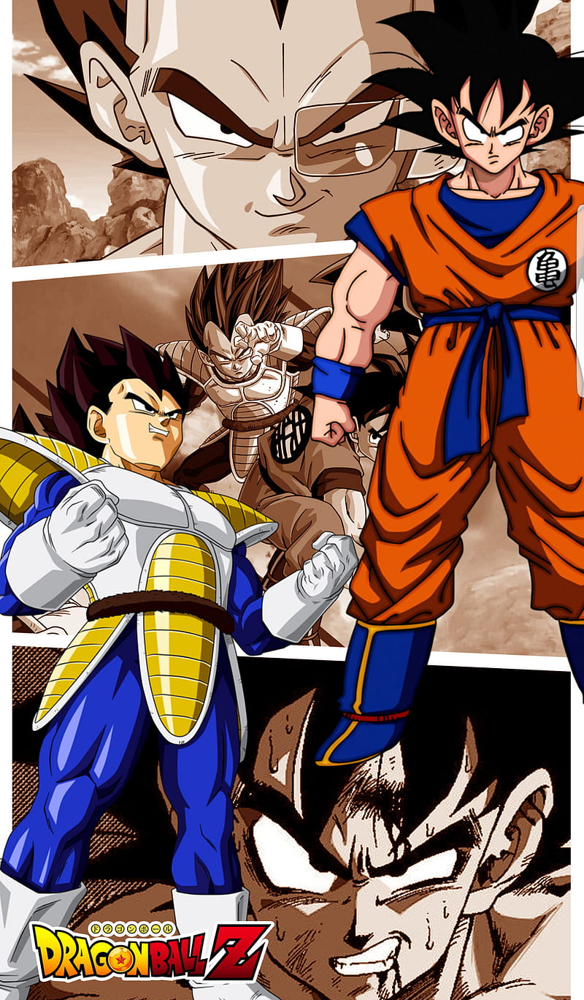
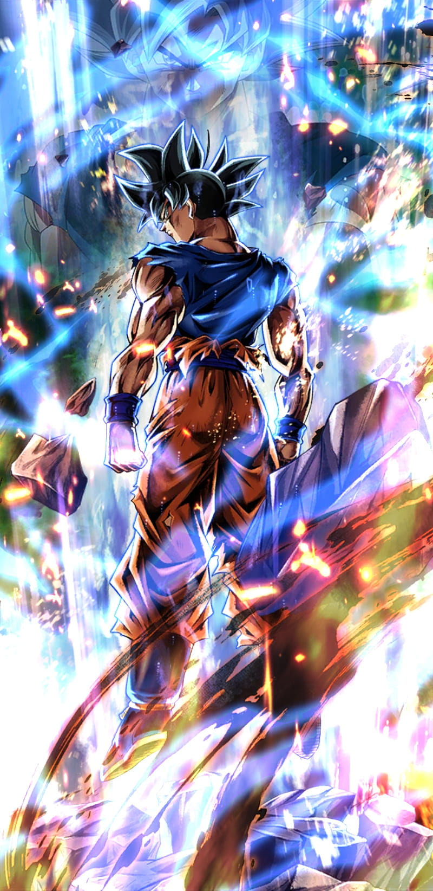
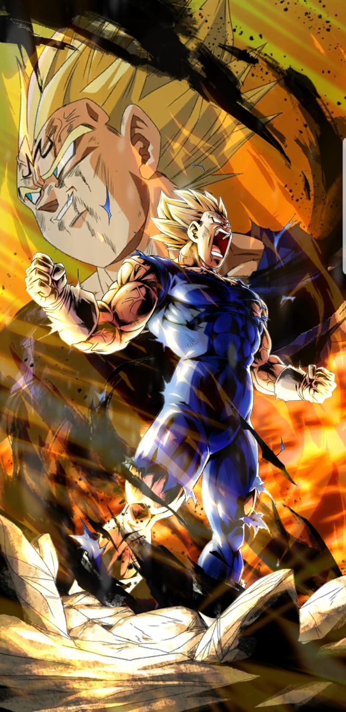
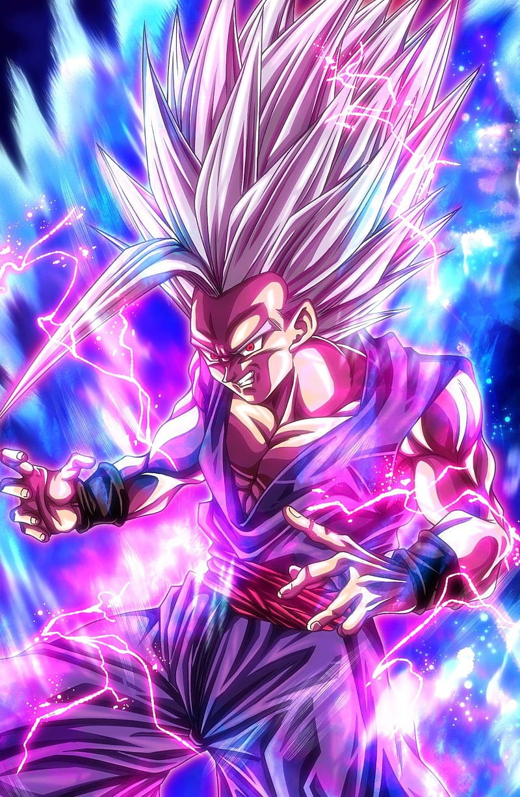
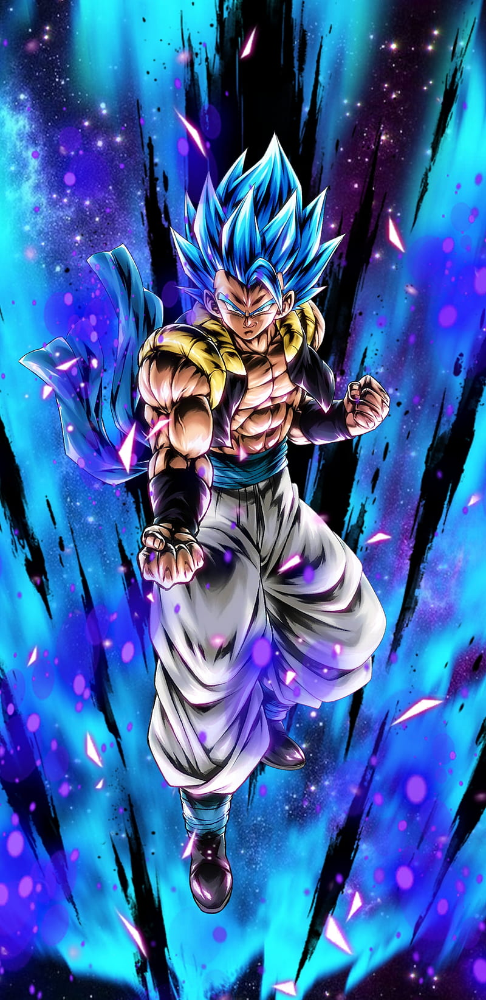
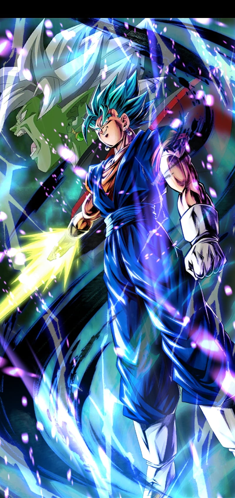
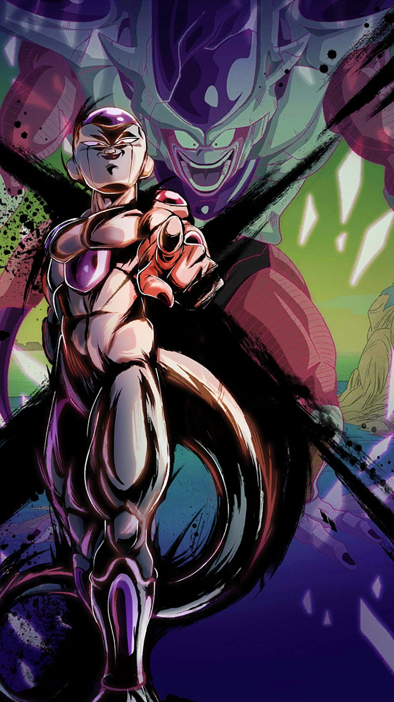
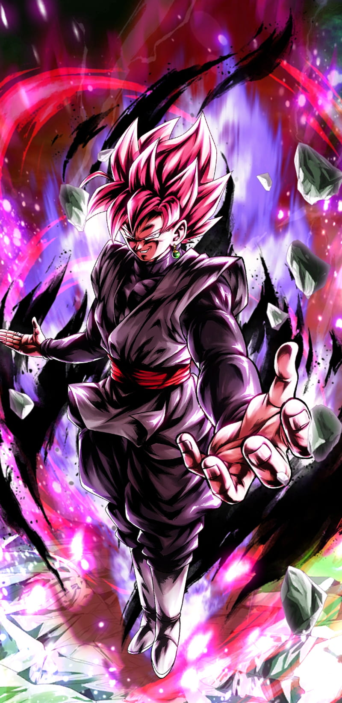

The Dragon Ball series, created by Akira Toriyama, is one of the most iconic and influential anime franchises in the world. It follows the journey of Goku, a Saiyan warrior raised on Earth, as he grows stronger and faces various powerful enemies. The story is divided into several parts, including Dragon Ball, Dragon Ball Z, Dragon Ball GT, and Dragon Ball Super. The series is known for its intense battles, powerful transformations, and deep character development.

Goku (Kakarot) is the protagonist of the Dragon Ball series. Originally sent to Earth as a child, Goku is a Saiyan, a powerful warrior race. Despite his violent origins, he is kind-hearted and loves fighting strong opponents. His journey throughout the series is one of personal growth, where he constantly strives to become stronger through rigorous training and fierce battles. Goku is best known for his iconic transformation into Super Saiyan and his use of powerful attacks like the Kamehameha wave.

Vegeta is the prince of the Saiyan race and initially appears as an antagonist in Dragon Ball Z. Proud, fierce, and often stoic, Vegeta has a complicated relationship with Goku. While he starts as a rival, over time, Vegeta becomes an ally and an important character in the series. His obsession with surpassing Goku is a major driving force behind his development. Vegeta is one of the most skilled fighters in the series, known for his signature attack, the Final Flash.

Gohan is the eldest son of Goku and Chi-Chi. From a young age, Gohan is depicted as highly intelligent and compassionate, with immense potential as a fighter. He is often more peaceful and studious than his father, but his power is unleashed in moments of great emotional distress, such as when he defeats Cell in the Dragon Ball Z series. Gohan's journey involves balancing his desire for peace with the responsibilities of being a warrior.

Gogeta is the fusion of Goku and Vegeta, created using the Fusion Dance, a technique that temporarily combines two individuals into one being. As Gogeta, they combine their powers and abilities, resulting in a warrior with immense strength, speed, and fighting prowess. Gogeta is a fan-favorite due to his overwhelming power and charismatic personality, appearing in multiple Dragon Ball films, including Dragon Ball Z: Fusion Reborn and Dragon Ball Super: Broly.

Vegito is another fusion of Goku and Vegeta, but this time through the use of the Potara Earrings, which are magical items that fuse two individuals permanently. Vegito is one of the most powerful characters in the Dragon Ball universe, combining Goku and Vegeta's strength and intellect. Unlike Gogeta, who is often more carefree and aggressive, Vegito retains a more balanced and intelligent personality, and his power is truly overwhelming, as seen during his battle with the villain Majin Buu.

Frieza is one of the most iconic and infamous villains in the Dragon Ball series, widely regarded as one of the greatest antagonists in anime history. He is a tyrant from the universe's most dangerous race, the Frieza Force, and the emperor of the universe. Known for his cold, ruthless personality and sadistic nature, Frieza has left an indelible mark on the series, both as a character and in terms of his impact on the protagonists.

Goku Black is a unique and mysterious character introduced in Dragon Ball Super. He is an alternate version of Goku from a different timeline who has been possessed by Zamasu, a corrupt Kaioshin. Zamasu's desire to rid the universe of mortals leads him to use Goku's body to enact his twisted plans. Goku Black possesses Goku's fighting abilities but also has a much darker and more sinister nature. His appearance and abilities evolve throughout the Future Trunks arc in Dragon Ball Super, making him one of the most dangerous enemies Goku and his allies have faced.